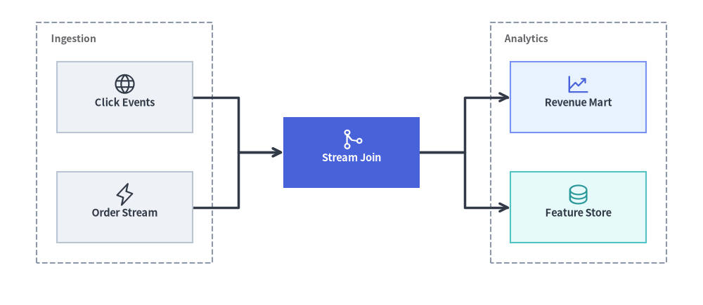
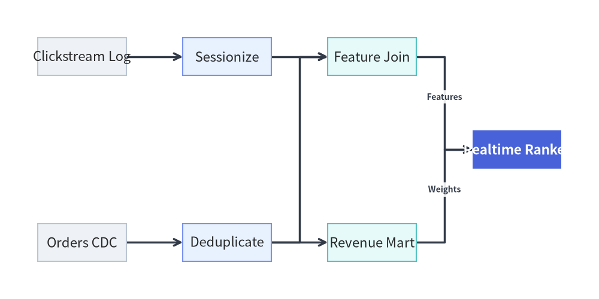
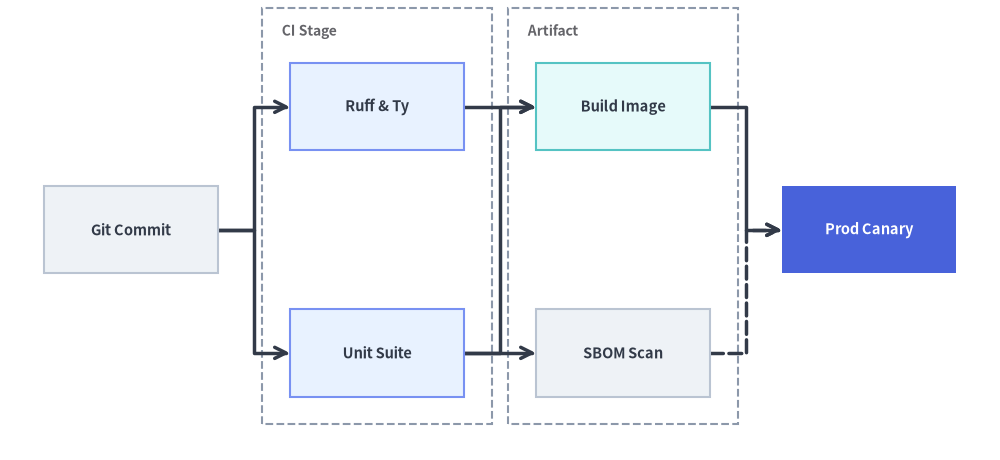
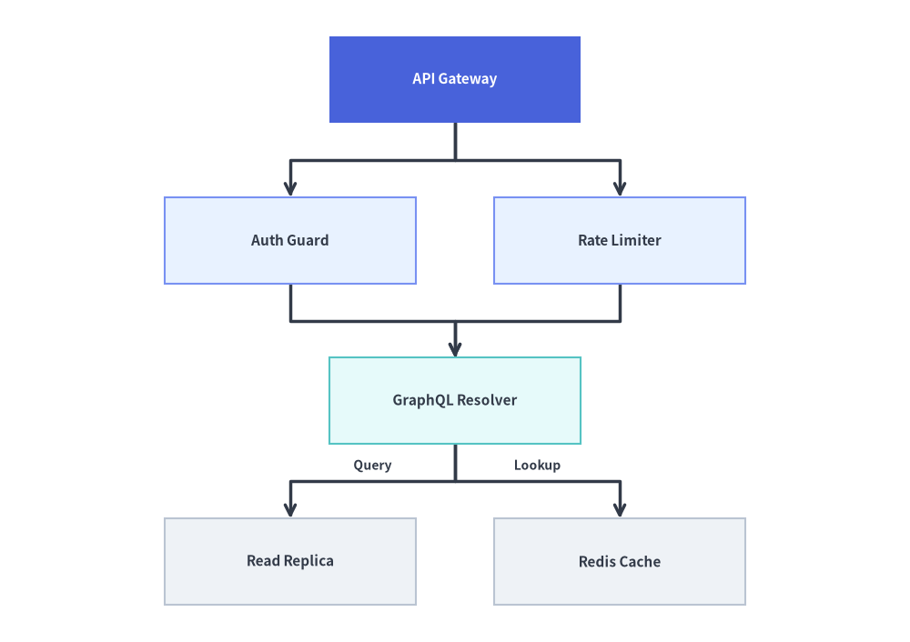

LayerGraph: Sugiyama Hierarchical DAGs & Pipelines
LayerGraph implements a Sugiyama-style layered Directed Acyclic Graph (DAG) solver—combining DFS cycle breaking, longest-path topological rank assignment, barycenter edge-crossing minimization, and Manhattan orthogonal routing.
It is the ideal solver for CI/CD pipelines, ETL / data lineage graphs (dbt, Airflow), build dependency graphs, and multi-stage workflows where nodes progress through sequential ranks from left-to-right (direction="LR") or top-to-bottom (direction="TB").

Source Code
from drawlib.canvas import save, setup
from drawlib.graph import LayerGraph
from drawlib.icons import phosphor
from drawlib.styles import Styles
setup(width=124, height=54)
g = LayerGraph(
direction="LR",
rank_sep=16.0,
node_sep=7.0,
default_node_width=24.0,
default_node_height=12.5,
default_node_text_style=Styles.DarkBold.patch(text_size=10.5),
)
# Rank 0: Ingestion Cluster
g.node("events", "\nClick Events", layer=0, style=Styles.Neutral)
g.node("orders", "\nOrder Stream", layer=0, style=Styles.Neutral)
g.cluster("ingest_box", ["events", "orders"], label="Ingestion", padding=3.5)
# Rank 1: Stream Processing Focal Node
g.node(
"joiner",
"\nStream Join",
layer=1,
style=Styles.PrimaryFlat,
text_style=Styles.WhiteBold.patch(text_size=10.5),
)
# Rank 2: Analytics Cluster
g.node("mart", "\nRevenue Mart", layer=2, style=Styles.PrimaryNeutral)
g.node("features", "\nFeature Store", layer=2, style=Styles.SecondaryNeutral)
g.cluster("analytics_box", ["mart", "features"], label="Analytics", padding=3.5)
g.edge("events", "joiner")
g.edge("orders", "joiner")
g.edge("joiner", "mart")
g.edge("joiner", "features")
layout = g.draw(margin=8.0)
for nid, icon_fn, st in [
("events", phosphor.globe, Styles.Dark),
("orders", phosphor.lightning, Styles.Dark),
("joiner", phosphor.git_merge, Styles.White),
("mart", phosphor.chart_line_up, Styles.Primary),
("features", phosphor.database, Styles.Secondary),
]:
n = layout.nodes[nid]
icon_fn((n.x, n.y + 2.3), width=4.2, style=st)
save()
1. Constructor & Rank Pinning API
from drawlib.graph import LayerGraph
from drawlib.styles import Styles
g = LayerGraph(
direction="LR", # "LR" (Left-to-Right) or "TB" (Top-to-Bottom)
rank_sep=14.0, # Fixed gap between layers (auto-scales if None)
node_sep=8.0, # Fixed gap between nodes in the same layer (auto-scales if None)
edge_routing="orthogonal", # "orthogonal" or "straight"
default_node_style=Styles.Neutral,
default_edge_style=Styles.DarkBold,
default_node_width=24.0,
default_node_height=12.0,
)
Parameter Reference
| Parameter | Type | Default | Description |
|---|---|---|---|
direction |
Literal["LR", "TB"] |
"LR" |
Flow progression axis ("LR" horizontal ranks or "TB" vertical ranks). |
rank_sep |
float | None |
None |
Fixed distance between successive layers/ranks. Auto-scales to canvas if None. |
node_sep |
float | None |
None |
Minimum distance between sibling nodes within the same layer. Auto-scales if None. |
edge_routing |
Literal["orthogonal", "straight"] |
"orthogonal" |
Edge path routing mode ("orthogonal" Z-bends or "straight" Euclidean lines). |
default_node_style |
Style | None |
None |
Default style for nodes without an explicit style (defaults to Styles.PrimaryFlat). |
default_node_text_style |
Style | None |
None |
Default typography style for node labels. |
default_edge_style |
Style | None |
None |
Default line style for edges (defaults to Styles.DarkBold). |
default_edge_text_style |
Style | None |
None |
Default text style for edge labels. |
default_node_width |
float |
22.0 |
Default node width in canvas units. |
default_node_height |
float |
12.0 |
Default node height in canvas units. |
Automatic Topological Ranking vs. Explicit layer Pinning
By default, LayerGraph assigns each node's rank (0, 1, 2, ...) automatically from the longest incoming dependency path. When you want strict alignment across specific stages:
- Per-Node Pinning: Pass
layer: inttog.node(id, label, layer=2). - Batch Tier Pinning (
g.tier):
Pins a list ofg.tier( name: str, nodes: list[str], *, layer: int | None = None, ) -> Nonenodesto the same horizontal/vertical rank (layer). Undeclared node IDs innodesare automatically created with default styling, and iflayeris provided, every node innodeshas itsnode.layerset tolayer. - Stage Clusters: Combine
g.tier(...)withg.cluster(id, nodes, label=...)to draw a visual stage boundary around a rank.
2. Automatic DAG Workflow & Dependency Graph
In this example, LayerGraph automatically infers the 4 topological ranks of a data engineering lineage DAG (Sources → Staging → Feature Store / Aggregations → ML Serving) and minimizes edge crossings using barycenter ordering:
from drawlib.canvas import save, setup
from drawlib.graph import LayerGraph
from drawlib.styles import Styles
setup(width=126, height=48)
g = LayerGraph(
direction="LR",
rank_sep=8.0,
default_node_style=Styles.Neutral,
default_node_text_style=Styles.DarkBold.patch(text_size=10.5),
default_node_width=23.0,
default_node_height=11.0,
)
# Source tables (automatically ranked at layer 0)
g.node("raw_events", "Clickstream", style=Styles.Neutral)
g.node("raw_orders", "Orders CDC", style=Styles.Neutral)
# Intermediate transformations (automatically ranked at layers 1 and 2)
g.node("clean_events", "Sessionize", style=Styles.PrimaryNeutral)
g.node("clean_orders", "Deduplicate", style=Styles.PrimaryNeutral)
g.node("user_features", "Feature Join", style=Styles.SecondaryNeutral)
g.node("rev_rollup", "Revenue Mart", style=Styles.SecondaryNeutral)
# Terminal consumer (automatically ranked at layer 3; highlighted as primary focal point)
g.node(
"ml_ranker",
"Realtime Rank",
style=Styles.PrimaryFlat,
text_style=Styles.WhiteBold.patch(text_size=10.5),
)
g.edge("raw_events", "clean_events")
g.edge("raw_orders", "clean_orders")
g.edge("clean_events", "user_features")
g.edge("clean_orders", "user_features")
g.edge("clean_orders", "rev_rollup")
g.edge("user_features", "ml_ranker")
g.edge("rev_rollup", "ml_ranker")
g.draw(margin=5.0)
save()

3. Multi-Stage Pipeline with Explicit layer= and tier() Pinning
When building a release pipeline or architecture stage diagram where specific nodes must align vertically even if they have different path depths, pin them explicitly via g.tier(..., layer=...) or g.node(..., layer=...) and wrap parallel stages in g.cluster(...):
from drawlib.canvas import save, setup
from drawlib.graph import LayerGraph
from drawlib.styles import Styles
setup(width=126, height=58)
g = LayerGraph(
direction="LR",
rank_sep=9.0,
default_node_width=22.0,
default_node_height=11.0,
default_node_text_style=Styles.DarkBold.patch(text_size=10.5),
)
# Stage 0: Source Trigger
g.node("git", "Git Commit", layer=0, style=Styles.Neutral)
# Stage 1: Parallel CI Checks (pinned via g.tier + enclosed in a cluster)
g.node("lint", "Ruff & Ty", style=Styles.PrimaryNeutral)
g.node("pytest", "Unit Suite", style=Styles.PrimaryNeutral)
g.tier("ci_stage", ["lint", "pytest"], layer=1)
g.cluster("ci_cluster", ["lint", "pytest"], label="CI Stage", padding=3.5)
# Stage 2: Artifact Packaging & Security Scan
g.node("docker", "Build Image", layer=2, style=Styles.SecondaryNeutral)
g.node("sbom", "SBOM Scan", layer=2, style=Styles.Neutral)
g.cluster("pkg_cluster", ["docker", "sbom"], label="Artifact", padding=3.5)
# Stage 3: Production Rollout (Hero focal node)
g.node(
"prod",
"Prod Canary",
layer=3,
style=Styles.PrimaryFlat,
text_style=Styles.WhiteBold.patch(text_size=10.5),
)
g.edge("git", "lint")
g.edge("git", "pytest")
g.edge("lint", "docker")
g.edge("pytest", "docker")
g.edge("pytest", "sbom")
g.edge("docker", "prod")
g.edge("sbom", "prod", line_style="dashed")
g.draw(margin=8.0)
save()

4. Top-to-Bottom (direction="TB") Ranked Hierarchy
Switching to direction="TB" flows topological layers vertically from top to bottom. Combine rank_sep and node_sep to control vertical spacing between ranks and horizontal spacing between sibling nodes in the same rank:
from drawlib.canvas import save, setup
from drawlib.graph import LayerGraph
from drawlib.styles import Styles
setup(width=116, height=82)
g = LayerGraph(
direction="TB",
rank_sep=9.5,
node_sep=10.0,
default_node_style=Styles.Neutral,
default_node_text_style=Styles.DarkBold.patch(text_size=11.0),
default_node_width=32.0,
default_node_height=11.0,
)
# Rank 0: Top-level entry point
g.node("gateway", "API Gateway", style=Styles.PrimaryFlat, text_style=Styles.WhiteBold.patch(text_size=11.0))
# Rank 1: Parallel middleware tier
g.node("auth", "Auth Guard", style=Styles.PrimaryNeutral)
g.node("ratelimit", "Rate Limiter", style=Styles.PrimaryNeutral)
# Rank 2: Core execution service
g.node("resolver", "GraphQL Resolver", style=Styles.SecondaryNeutral)
# Rank 3: Downstream persistence tier
g.node("sql_db", "Read Replica", style=Styles.Neutral)
g.node("redis", "Redis Cache", style=Styles.Neutral)
g.edge("gateway", "auth")
g.edge("gateway", "ratelimit")
g.edge("auth", "resolver")
g.edge("ratelimit", "resolver")
g.edge("resolver", "sql_db", "Query")
g.edge("resolver", "redis", "Lookup")
g.draw(margin=6.0)
save()

5. Best Practices
- Choose
direction="LR"for Wide Pipelines,"TB"for Deep Hierarchies: Left-to-right ("LR") fits horizontal widescreen canvases and documentation columns naturally when a pipeline has 3–5 stages. Use"TB"when nodes have wide text labels or many parallel branches per rank. - Use
rank_sepandnode_sepfor Edge Labels: If you attach text labels to edges (g.edge("a", "b", "Deploy")), settingrank_sep=14.0or higher guarantees generous clearance for the label badge. - Group Parallel Ranks with
g.cluster(): Wrapping nodes that share the samelayerinside ag.cluster()visually communicates concurrent execution stages.